Timeline Kegiatan
Ikuti alur perjalanan pengabdian kami, mulai dari perencanaan awal di kampus, koordinasi lapangan, hingga pelaksanaan program kerja inti di Desa Mekarsari.
Juli 2026
Rencana Kegiatan
Juli 2026
Pelaksanaan KKN Tematik
Program Kerja & Pengabdian Masyarakat
Pembukaan resmi, pelepasan mahasiswa di Desa Mekarsari, dan penataan posko kelompok.
Implementasi penuh program kerja di bidang Digitalisasi, Ekonomi, Kesehatan, dan Pendidikan.
Penyusunan laporan hasil akhir, lokakarya desa, penutupan KKN, dan perpisahan dengan warga.
Lokasi: Desa Mekarsari, Kabupaten Sukabumi
Dokumentasi Kegiatan

Juni 2026
Rapat Ke-4
21 Juni 2026
Rapat Kelompok Ke-4
Finalisasi Laporan Rencana Kerja & Teknis Posko
Evaluasi hasil survey lapangan untuk finalisasi sasaran program kerja utama.
Penyusunan anggaran biaya operasional KKN dan pembagian perlengkapan posko.
Koordinasi akhir mengenai jadwal keberangkatan dan transportasi ke Desa Mekarsari.
Lokasi: Somewhere Coffee
Dokumentasi Rapat
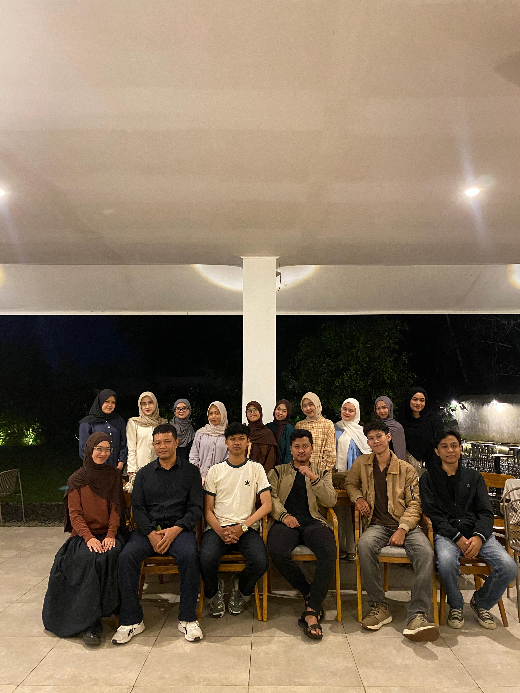
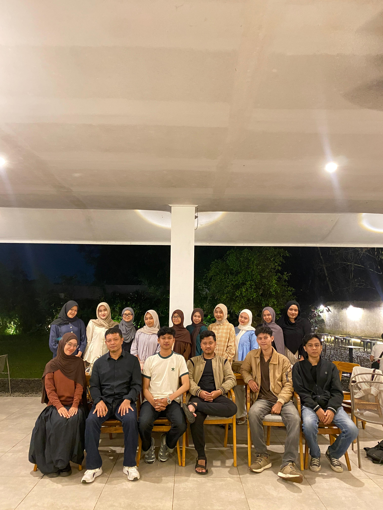
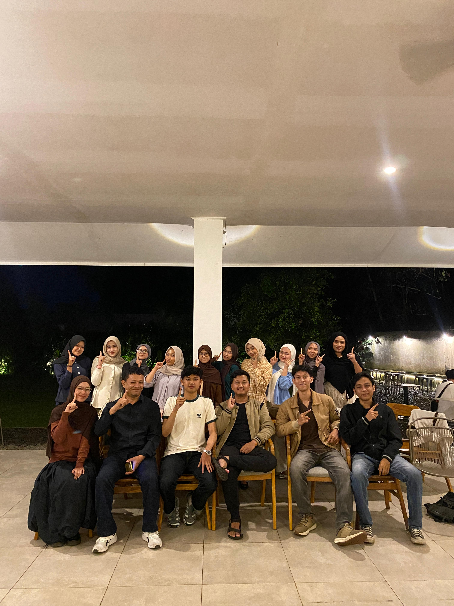
Survey Lapangan
16 Juni 2026
Survey Pertama Ke Desa Mekarsari
Observasi Geografis & Silaturahmi Perangkat Desa
Kunjungan dan perkenalan tim KKN UMMI kepada jajaran staf Desa Mekarsari.
Wawancara dengan Sekretaris Desa mengenai profil kependudukan dan masalah kesehatan.
Peninjauan langsung batas wilayah, fasilitas umum, dan potensi pertanian desa.
Lokasi: Desa Mekarsari, Kecamatan Sagaranten
Dokumentasi Survey
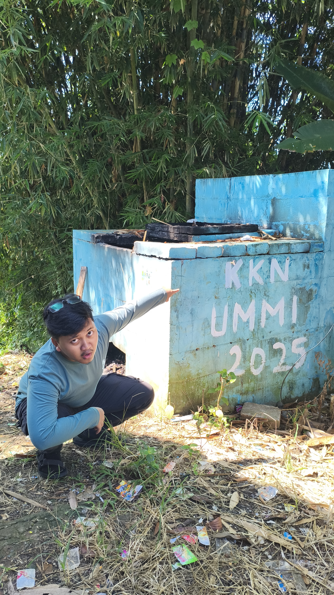
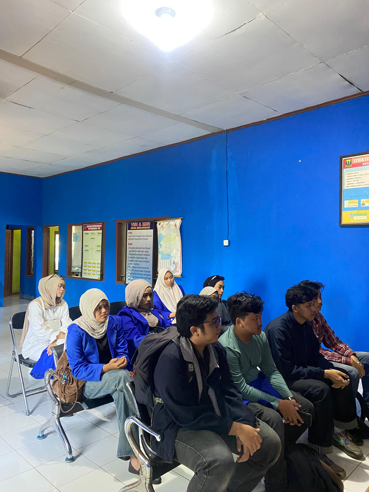
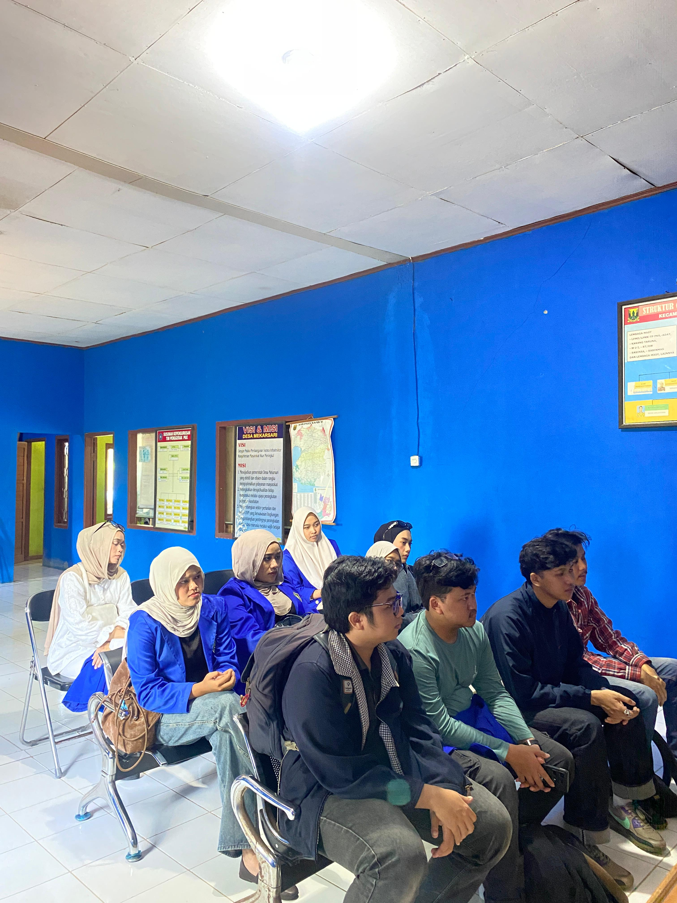
Rapat Ke-3
12 Juni 2026
Rapat Kelompok Ke-3
Penyusunan Rencana Program Kerja & Instrumen Survey
Brainstorming pembagian program kerja ke dalam 4 pilar utama pemberdayaan.
Penyusunan daftar wawancara kualitatif untuk survey ke perangkat desa Mekarsari.
Pemetaan instrumen kuisioner untuk identifikasi potensi UMKM desa.
Lokasi: Rumah Ketua
Dokumentasi Rapat
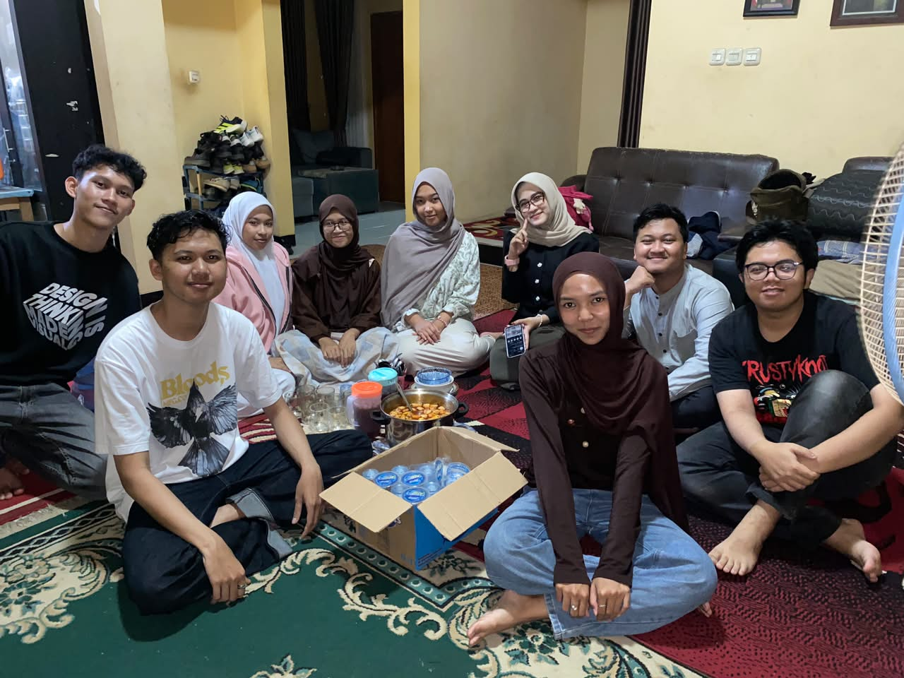
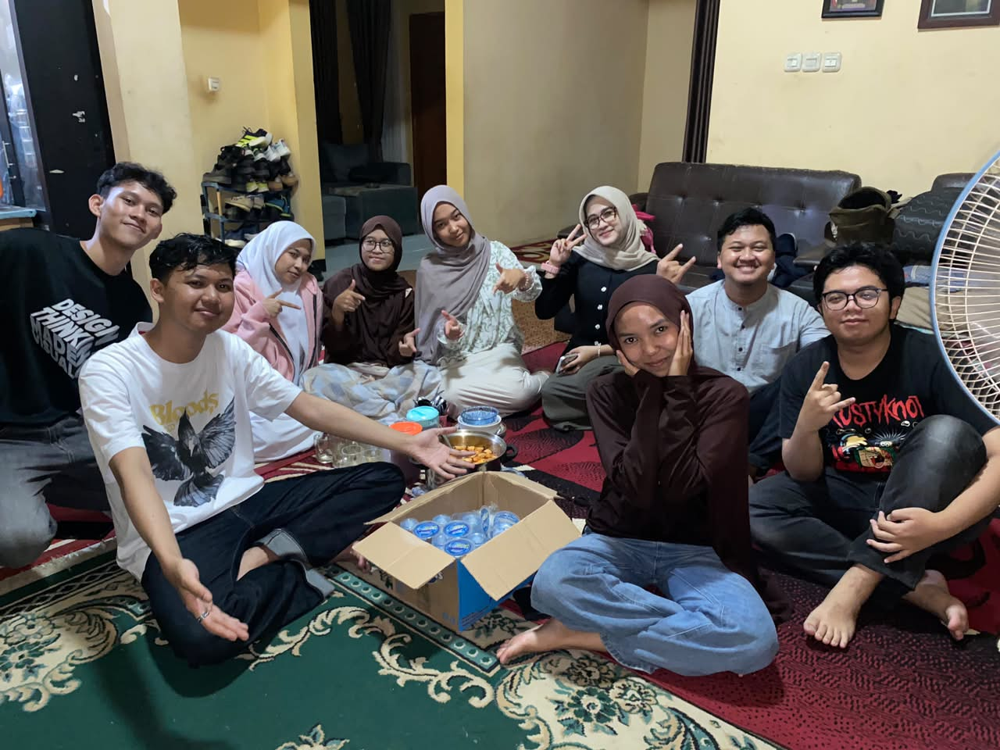
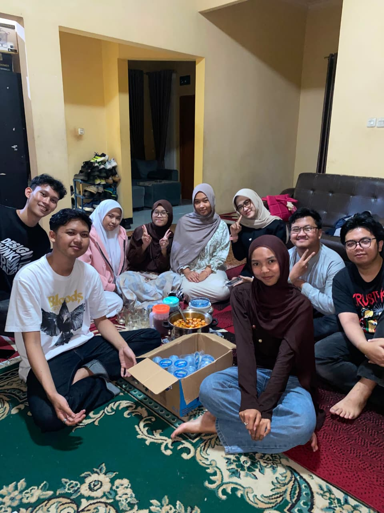
Rapat Ke-2
5 Juni 2026
Rapat Kelompok Ke-2
Pembahasan Petunjuk Teknis & Kajian Awal Potensi Desa
Pembahasan petunjuk teknis pelaksanaan KKN Tematik UMMI Tahun 2026.
Studi literatur awal mengenai kondisi demografi Desa Mekarsari secara online.
Koordinasi iuran wajib awal kelompok untuk operasional perlengkapan dasar.
Lokasi: Kampus Universitas Muhammadiyah Sukabumi
Dokumentasi Rapat
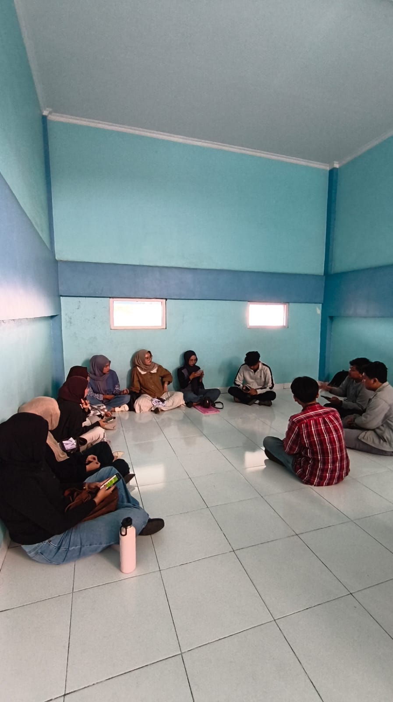


Mei 2026
Pertemuan Perdana
21 Mei 2026
Pertemuan Pertama Kelompok KKN
Koordinasi Awal Anggota Tim Kelompok
Perkenalan anggota kelompok KKN UMMI dari berbagai lintas program studi.
Pembentukan susunan organisasi inti kelompok (Ketua, Sekretaris, Bendahara, Humas).
Diskusi awal mengenai pembagian tugas umum pengerjaan KKN.
Lokasi: Nama Coffee
Dokumentasi Rapat
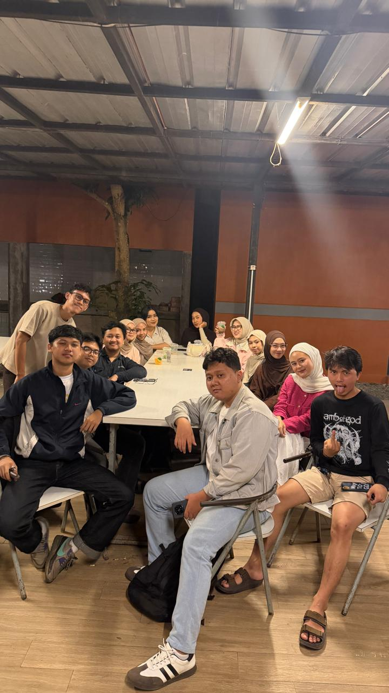
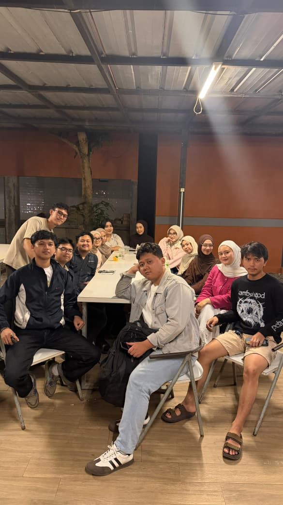